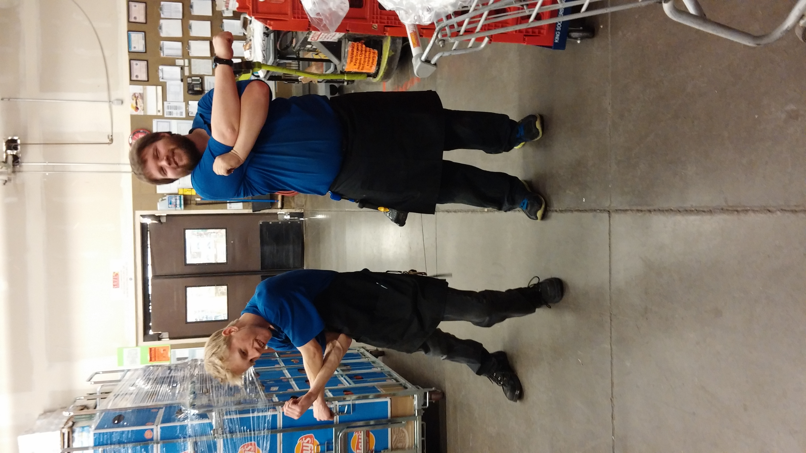

Feeding the Community3 March 2021 By Joshua Doucet A reflection on my early working years at the grocery store I applied for a job at the local grocery store after finishing high school at age 18. Little did I know that the job would change my life forever. The local grocery store is a chain called King Soopers, which is owned by the parent company Kroger. During my 8+ years at Kings my mission was to feed the human spirit. Through fresh high-quality food and friendly helpful service, I was serving the community that I grew up in. I worked with hundreds of people and served tens of thousands of customers from a variety of backgrounds that taught me a lot about life. Kings is where I built my work ethic, and where I began to understand that my perspective of the world is different than the perspective of other people we walk this planet with. When I started at Kings I was a bagger and a cart pusher. In this role I learned about the importance of a highly satisfied customer. This was my first job as a working individual, and I received a lot of insight into the inner workings of large corporate operations. This is where I continued to refine my “soft-skills” such as communication, punctuality, and time management. Soon after joining Kings I was offered a promotion to overnight stocker. This role required me to adapt to a new environment that demanded a sense of urgency, and a new sleep schedule. As a night walker I broke apart grocery deliveries and stocked hundreds of boxes each night. I learned how to work fast and efficient. This role was challenging for me due to the late-night/early-morning hours, but thankfully I was soon given the opportunity to join the meat and seafood department where I would spend most of my time at Kings. In the meat and seafood department I thrived and built upon my ability to learn new things and lead my department to success. I became confident in communication, and when I did not know something I was committed to find out more and follow up with customers and colleagues. I was adamant that I wanted to be better and to do more, so I interviewed to be a meat and seafood department supervisor. I got the job and lead my team to success for approximately 3 years. In the role of supervisor, I created schedules, ordered merchandise, maintained a sanitary department, grew department sales, communicated company goals, kept my colleagues on task, and completed performance evaluations. This was an opportunity that I will forever be thankful for because I learned how to lead rather than manage people. As I approached 3 years as a supervisor I reached a point in my life where I asked myself “Is this what I want to keep doing with the remainder of my life?” My answer was no, and I soon enrolled in college. As a kid I always excelled at mathematics and thought computers were interesting, so I started my journey towards a bachelor’s degree in computer science. While I worked my way through school I continued to work at Kings but only part-time. The schedule flexibility provided by Kings was crucial in allowing me to pursue my education while maintaining some level of financial income. Overall, I am forever thankful for all that I had learned from all the customers and colleagues that I crossed paths with at King Soopers. I look back at these times and smile, not only because I learned so much, but also because I was able to improve the lives of the people in my community. |
 |